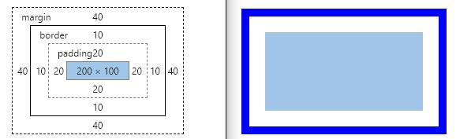
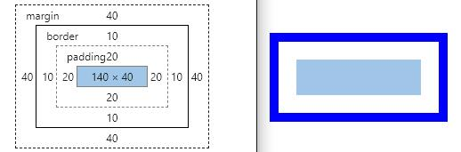
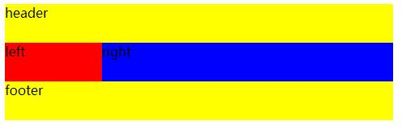
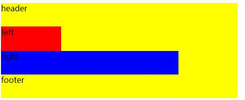
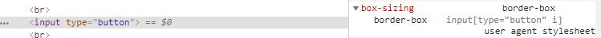

前一阵子遇到一个小问题，在同样的样式（主要是宽高边距之类的）条件下，DIV在移动端和PC端的宽度不一样，排除了绝大多数样式的问题，但是有个比较陌生，就是box-sinzing，其实经常看到，只不过没怎么注意过，连具体的值都不知道有哪些，在开发者工具里面试了一下，果然和这个样式有关，因此查了一些资料并记录一下。
首先，盒子模型大家都知道，W3C标准的Box Model由四部分组成——content、padding、border、margin
Every box is composed of four parts (or areas), defined by their respective edges: the content edge, padding edge, border edge, and margin edge.
如果我们给一个应用了标准盒模型的div设置一个宽度，那么，实际上我们设置的是上文提到的content的宽度，也就是下图这个样子

还有个不那么“标准”的盒模型，就是IE6以下（也就是处于Quirks怪异模式）的浏览器所使用的，在这种情况下：
这个时候如果我们给div设置一个宽度，那就是为元素的内容+边框+内边距设置了一个总值，如图所示

上面张图片都使用以下这段代码
div {
width: 200px;
height: 100px;
margin: 40px;
padding: 20px;
border: 10px solid blue;
}通过box-sizing这个样式我们可以改变这种宽度计算方式，它的属性值有两个：content-box和border-box。默认值为content-box，也就是标准的盒子模型，此时的计算公式为
另一个属性为border-box，它的width和height属性包括内容，内边距和边框，但不包括外边距。看到这里相信大家都已经明白了，我们用了一个新的属性重现了一个不太“标准”的标准，被设置为border-box的元素在计算宽高时使用的就是IE6的模式。
其实也不能那么说，只是绕了一圈之后时间又证明了哪一种方式更合理而已，也并没有谁对谁错的问题，那么这种计算宽高的模式好在哪里呢？我们举个简单的例子

<div id="container">
<div id="header" class="content_box">
header
</div>
<div id="left" class="content_box">
left
</div>
<div id="right" class="content_box">
right
</div>
<div style="clear: both;"></div>
<div id="footer" class="content_box">
footer
</div>
</div>.content_box {
height: 48px;
}
#container {
width: 480px;
background: yellow;
}
#left {
width: 120px;
background: red;
float: left;
}
#right {
width: 360px;
background: blue;
float: left;
}这种左右布局的应用可以说十分广泛，并且看起来很直观且合理，但是如果我们随便在left或right中加1px的内边距或border，整个布局就会被破坏，原因很好理解，按我们上面所说，现代浏览器默认是content-box模式，设定的宽度是内容的宽度，当我们增加了padding或者border的时候，left+right就不再是120+360=480了，而是120+360+1=481，由于容器的宽度不够，div就会自动换到下一行，就变成了现在这个样子：

说到这里，已经有人开始想了，为什么以前没有发现这个问题，我也是最近才遇到这种情况，因为bootstrap已经预先重置了默认的box-sizing，而很多组件又是以bootstrap为基底来做文章，所以即使我们不知道box-sizing这一样式，很可能也已经熟悉了这种模式。
* {
-webkit-box-sizing: border-box;
-moz-box-sizing: border-box;
box-sizing: border-box;
}
*:before,
*:after {
-webkit-box-sizing: border-box;
-moz-box-sizing: border-box;
box-sizing: border-box;
}另外，bootstrap并不是在所有地方都用border-box，在一些特定元素上还是使用content-box
hr {
height: 0;
-webkit-box-sizing: content-box;
-moz-box-sizing: content-box;
box-sizing: content-box;
}
input[type="checkbox"],
input[type="radio"] {
-webkit-box-sizing: border-box;
-moz-box-sizing: border-box;
box-sizing: border-box;
padding: 0;
}当看到bootstrap对控件单独设置box-sizing时我产生一些疑问，控件的默认box-sizing难道不一样吗？事实证明确实不一样，以常见的text和button来说，text默认就是content-box，而button则是border-box，这就不难理解为什么有时候我们给不同的控件设置同样的宽高却又无法对齐，这也是box-sizing在作祟。

不过对于这一样式也有分歧，所以不同的样式库使用box-sizing标准就不太相同，当我们引入了不同的库之后就要额外甄别这一问题，选择项目最适合的那种。